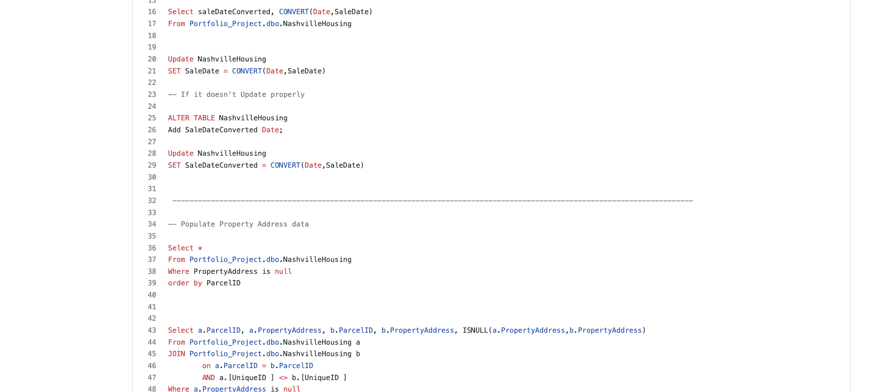

About Me
I have a diverse range of interests and skills that span across various areas of the technology industry. My expertise includes data analytics and software development, along with a strong foundation in cloud services, communication systems, and network technologies.
In the field of data analytics and science, I have honed my skills in SQL, Tableau, Excel, Python, and machine learning. This has allowed me to effectively extract insights from large data sets and to turn these insights into actionable business decisions. My proficiency in Python also enables me to build predictive models and automate data-driven processes.
On the software development front, I am highly skilled in HTML 5, CSS 3, JavaScript, JQuery, and APIs. These technologies allow me to create robust and visually appealing web applications that are user-friendly and functional. I have a strong understanding of how to work with RESTful APIs and how to use front-end and back-end technologies together to build seamless and integrated applications.
In addition, I have a strong background in cloud services, communication systems, and network technologies. I have a deep understanding of TCP/IP protocols, routing protocols, and other networking technologies. I am also familiar with cloud platforms such as AWS and Oracle Cloud, which enables me to build and manage highly scalable applications.
Overall, my interests and skills provide a comprehensive view of the technology industry and my ability to thrive in a variety of roles. Whether it's working on data analytics and science projects, software development projects, or cloud services and network technology projects, I have the necessary skills and experience to excel in my work and contribute to the success of my team.
Web Development
My portfolio website is a showcase of my skills and experience in web development. I utilized HTML5 and CSS3 to create a clean, modern, and user-friendly design. The site is easy to navigate and highlights my experience, education, and projects in an organized manner. I put my attention to detail and design skills to work to ensure that the website reflects my passion for web development and my commitment to delivering high-quality work.
I aimed to make the website visually appealing and engaging, while also delivering important information about my background, skills, and experience. The website is responsive and works seamlessly on various devices, including desktop, laptop, tablet, and mobile, providing a consistent user experience to all visitors.
Overall, my portfolio website is a reflection of my dedication and expertise in web development, and I am confident that it will effectively communicate my qualifications to potential clients and employers.
COVID 19 Data Exploration

In this project, I developed my skills in data analysis and visualization by working with global Covid data on SQL Server. I performed a series of queries to uncover important insights related to the infection rate based on regional population, the number of deaths by location, and other relevant metrics. To present this information, I created a comprehensive dashboard using Tableau.
By working on this project, I not only honed my technical abilities, but also gained a deeper understanding of the impact of the Covid-19 pandemic across the world. I am proud to have contributed to a better understanding of this global crisis and I am eager to continue developing my skills in data analysis and visualization.
AirBnB
Data Exploration
In this project, I utilized Tableau to create a comprehensive visualization of the Seattle AirBnB Data for the year 2016 obtained from Kaggle. The visualization allowed me to gain valuable insights into various factors influencing the price and demand of AirBnB properties in Seattle, including seasonal patterns in the rental market and popular amenities.
The experience provided me with hands-on experience in data visualization and an opportunity to explore and understand real-world data.
{kind=link}
MOVIES DATA CORRELATION
In this project, I worked with a movies dataset and applied my skills in data cleaning and correlation analysis using Python in a Jupyter Notebook environment. The data cleaning process involved removing missing values and inconsistencies, transforming and normalizing the data, and preparing it for analysis. This project demonstrated my ability to identify and address potential issues in the data, and my skills in data cleaning techniques using Python.
Furthermore, the correlation analysis allowed me to identify relationships between different attributes of the movies data and understand the impact they have on the overall success of a movie. This experience has further honed my skills in data analysis, providing me with a deeper understanding of how to draw meaningful insights from data.
DATA CLEANING IN SQL

In this project, I worked on housing data for Nashville and used SQL to perform various cleaning operations to make the data more usable for analysis.
The data cleaning process involved removing inconsistencies and errors, transforming the data into a more suitable format, and ensuring the quality of the data for further analysis.
This project demonstrated my ability to work with large datasets, perform data cleaning operations using SQL, and effectively prepare data for analysis.
Publications
1. P. K. Jha, S. S. Shree and D. S. Kumar, "An opportunistic-non orthogonal multiple access based cooperative relaying system over Rician fading channels," 2018 4th International Conference on Recent Advances in Information Technology (RAIT), 2018, pp. 1-5, doi: 10.1109/RAIT.2018.8388973.
2. P. K. Jha and D. S. Kumar, "Achievable rate analysis of relay assisted cooperative NOMA over Rician fading channels," 2018 4th International Conference on Recent Advances in Information Technology (RAIT), 2018, pp. 1-5, doi: 10.1109/RAIT.2018.8388972.
3. P. K. Jha, N. Kachare, K. Kalyani and D. S. Kumar, "Performance analysis of FSO using relays and spatial diversity under log-normal fading channel," 2018 4th International Conference on Electrical Energy Systems (ICEES), 2018, pp. 121-125, doi: 10.1109/ICEES.2018.8442405.
4. P. K. Jha, N. Mishra, and D. S. Kumar. "Challenges and potentials for visible light communications: State of the art." AIP conference proceedings. Vol. 1849. No. 1. AIP Publishing LLC, 2017.
5. N. Mishra, D. S. Kumar and P. K. Jha. "Performance analysis of dual-hop optical wireless communication systems over k-distribution turbulence channel with pointing error." AIP Conference Proceedings. Vol. 1849. No. 1. AIP Publishing LLC, 2017.